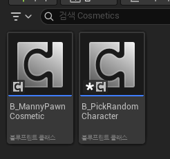
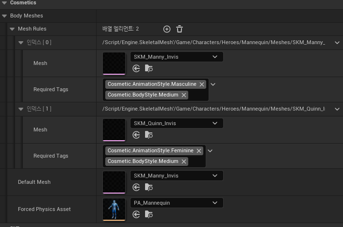
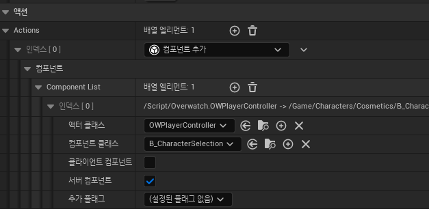
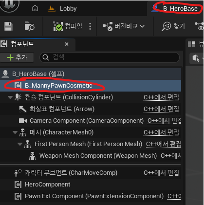
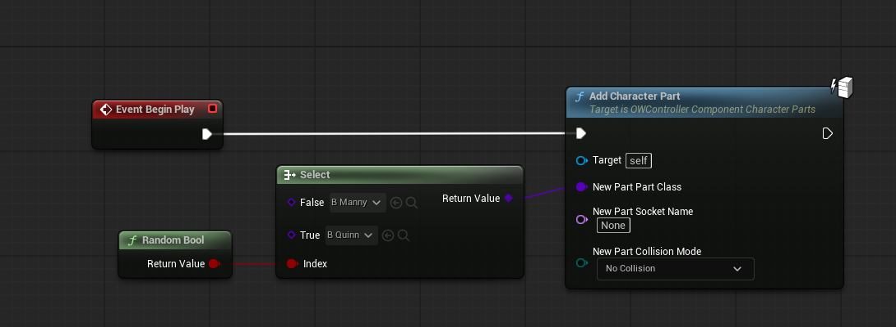

Cosmetic은 말그대로 치장이라는 의미로 사용된다.
Pawn에 붙는 메시/무기 스킨등을 변경하는데 사용한다고 한다.
이를 위해서 UOWPawnComponent_CharacterParts, UOWControllerComponent_CharacterParts 가 사용된다.
UOWControllerComponent_CharacterParts
UOWControllerComponent_CharacterParts 는 TArray<FOWControllerCharacterPartEntry> 를 멤버로 갖는다.
FOWControllerCharacterPartEntry (파츠데이터와, Handler Wrapper)
// 컨트롤러 컴포넌트에서 요청한 캐릭터 파츠
USTRUCT()
struct FOWControllerCharacterPartEntry
{
GENERATED_BODY()
FOWControllerCharacterPartEntry()
{}
public:
// 이 항목이 나타내는 캐릭터 파츠
UPROPERTY(EditAnywhere, meta=(ShowOnlyInnerProperties))
FOWCharacterPart Part;
// 이미 Pawn에 적용되었을 때의 핸들
// 핸들러가 있으면 나중에 ValidCheck이나 값 조회할때 편하다. 언리얼에서 자주 사용한느 패턴이니 학습하면 좋음
FOWCharacterPartHandle Handle;
// 이 파츠의 출처
ECharacterPartSource Source = ECharacterPartSource::Natural;
};
FOWCharacterPart (실제 파츠 데이터)
// 캐릭터 파츠 요청
USTRUCT(BlueprintType)
struct FOWCharacterPart
{
GENERATED_BODY()
// 스폰할 파츠
// 언리얼에서는 메시 하나하나를 파츠로 보기보다는
// 하나의 액터 프리팹을 파츠로 생각한다. (이는 블루프린트 친화성때문이라고 생각한다)
// CC에서의 VisualComponents를 생각해보면 편할거같다 (이렇게 액터로 빼면 더 좋았을듯)
UPROPERTY(EditAnywhere, BlueprintReadWrite)
TSubclassOf<AActor> PartClass;
// 파츠를 부착할 소켓입니다. 없을 수도 있습니다.
UPROPERTY(EditAnywhere, BlueprintReadWrite)
FName SocketName;
// 파츠의 Primitive 컴포넌트 충돌 처리 방식
UPROPERTY(EditAnywhere, BlueprintReadWrite)
ECharacterCustomizationCollisionMode CollisionMode = ECharacterCustomizationCollisionMode::NoCollision;
// 충돌 모드를 무시하고 다른 파츠와 비교합니다.
static bool AreEquivalentParts(const FOWCharacterPart& A, const FOWCharacterPart& B)
{
return (A.PartClass == B.PartClass) && (A.SocketName == B.SocketName);
}
};
Cosmetic은 게임 규칙이라기보다는 "Pawn을 어떻게 보이게 할 것인가"에 가까운 영역이다.
그래서 라이라식 구조에서는 Cosmetic 상태를 Pawn 내부에 직접 하드코딩하지 않고, Controller가 원하는 파츠 목록을 들고 있다가 현재 Possess 중인 Pawn에 적용하는 식으로 나눈다.
쉽게 말하면
- Controller 쪽 : 플레이어가 어떤 외형을 쓰고 싶은지 기억
- Pawn 쪽 : 지금 화면에 붙어야 하는 파츠 액터를 실제로 스폰/제거
- FastArray : 서버가 정한 파츠 목록을 클라이언트에 효율적으로 복제
- Cosmetic Tag : 붙은 파츠들을 보고 바디 메시/애니 레이어를 고르는 기준
큰 흐름
현재 Cosmetic 흐름의 핵심은 이거다.
ControllerComponent_CharacterParts
-> PawnComponent_CharacterParts
-> FOWCharacterPartList (FastArray Replication)
-> FOWAppliedCharacterPartEntry
-> UChildActorComponent로 실제 Part Actor 스폰
-> Part Actor의 GameplayTag를 모아 BodyMesh/AnimLayer 선택
왜 이렇게 하냐
→ Pawn은 리스폰, possession 변경, 관전, 캐릭터 교체 등으로 바뀔 수 있다.
하지만 플레이어가 선택한 스킨/파츠 요청은 Pawn보다 오래 살아야 할 수 있다.
그래서 요청 목록은 ControllerComponent가 들고, 현재 Pawn에 실제로 붙는 시각화는 PawnComponent가 담당한다.
FOWCharacterPartHandle
USTRUCT(BlueprintType)
struct FOWCharacterPartHandle
{
GENERATED_BODY()
void Reset()
{
PartHandle = INDEX_NONE;
}
bool IsValid() const
{
return PartHandle != INDEX_NONE;
}
private:
UPROPERTY()
int32 PartHandle = INDEX_NONE;
friend FOWCharacterPartList;
};
이 핸들은 "내가 추가한 파츠를 나중에 제거하기 위한 표식"이다.
FOWCharacterPart 자체를 비교해서 제거할 수도 있지만, 같은 클래스/소켓의 파츠가 여러 번 추가되거나 출처가 다르면 애매해질 수 있다.
그래서 Add할 때 PartHandleCounter로 핸들을 만들고, Remove할 때 이 핸들을 기준으로 제거한다.
중요한 점은 PartHandle이 private이고 FOWCharacterPartList만 friend라는 것이다.
즉 아무나 핸들 값을 조작하지 못하고, 리스트만 핸들 생성/해석을 담당한다.
FOWCharacterPart
USTRUCT(BlueprintType)
struct FOWCharacterPart
{
GENERATED_BODY()
UPROPERTY(EditAnywhere, BlueprintReadWrite)
TSubclassOf<AActor> PartClass;
UPROPERTY(EditAnywhere, BlueprintReadWrite)
FName SocketName;
UPROPERTY(EditAnywhere, BlueprintReadWrite)
ECharacterCustomizationCollisionMode CollisionMode = ECharacterCustomizationCollisionMode::NoCollision;
};
FOWCharacterPart는 실제로 붙일 외형 하나에 대한 데이터이다.
여기서 Mesh를 직접 들고 있지 않고 TSubclassOf<AActor>를 들고 있다는 점이 포인트다.
왜 Actor냐
→ Cosmetic Part가 단순 SkeletalMesh 하나일 수도 있지만, 파티클, 사운드, 추가 컴포넌트, GameplayTag, Blueprint 로직을 같이 들 수 있다.
메시 경로 하나만 들면 확장성이 약한데, Actor 클래스로 빼두면 디자이너가 Blueprint로 파츠 프리팹처럼 다룰 수 있다.
SocketName은 이 파츠가 Pawn의 어느 소켓에 붙을지 결정한다.
무기, 등 장식, 머리 장식 같은 것들이 모두 같은 시스템을 탈 수 있다.
UOWControllerComponent_CharacterParts
UCLASS(meta = (BlueprintSpawnableComponent))
class UOWControllerComponent_CharacterParts : public UControllerComponent
{
GENERATED_BODY()
protected:
UPROPERTY(EditAnywhere, Category=Cosmetics)
TArray<FOWControllerCharacterPartEntry> CharacterParts;
};
ControllerComponent는 실제 스폰된 Actor를 들고 있지 않는다.
대신 "이 Controller가 현재 Pawn에 적용하고 싶은 파츠 요청 목록"을 들고 있다.
void UOWControllerComponent_CharacterParts::BeginPlay()
{
Super::BeginPlay();
if (HasAuthority())
{
if (AController* OwningController = GetController<AController>())
{
OwningController->OnPossessedPawnChanged.AddDynamic(this, &ThisClass::OnPossessedPawnChanged);
if (APawn* ControlledPawn = GetPawn<APawn>())
{
OnPossessedPawnChanged(nullptr, ControlledPawn);
}
}
ApplyDeveloperSettings();
}
}
서버 권한에서만 OnPossessedPawnChanged를 구독한다.
Cosmetic은 시각 요소지만, "어떤 파츠가 적용되었는가"라는 durable 상태는 서버가 정해야 한다.
클라이언트가 마음대로 파츠를 붙이면 다른 클라이언트와 상태가 달라질 수 있기 때문.
void UOWControllerComponent_CharacterParts::OnPossessedPawnChanged(APawn* OldPawn, APawn* NewPawn)
{
if (UOWPawnComponent_CharacterParts* OldCustomizer = OldPawn ? OldPawn->FindComponentByClass<UOWPawnComponent_CharacterParts>() : nullptr)
{
for (FOWControllerCharacterPartEntry& Entry : CharacterParts)
{
OldCustomizer->RemoveCharacterPart(Entry.Handle);
Entry.Handle.Reset();
}
}
if (UOWPawnComponent_CharacterParts* NewCustomizer = NewPawn ? NewPawn->FindComponentByClass<UOWPawnComponent_CharacterParts>() : nullptr)
{
for (FOWControllerCharacterPartEntry& Entry : CharacterParts)
{
if (!Entry.Handle.IsValid() && Entry.Source != ECharacterPartSource::NaturalSuppressedViaCheat)
{
Entry.Handle = NewCustomizer->AddCharacterPart(Entry.Part);
}
}
}
}
이 함수가 핵심이다.
Pawn이 바뀌면 예전 Pawn에서는 파츠를 제거하고, 새 Pawn에는 다시 적용한다.
그래서 코스메틱 요청은 Controller에 남아있고, 실제 스폰된 파츠는 Pawn 생명주기에 맞춰 갈아탄다.
굳 포인트
→ 리스폰이 들어와도 ControllerComponent의 CharacterParts는 유지되고, 새 Pawn에 다시 Add된다.
ECharacterPartSource
enum class ECharacterPartSource : uint8
{
Natural,
NaturalSuppressedViaCheat,
AppliedViaDeveloperSettingsCheat,
AppliedViaCheatManager
};
파츠가 어디서 왔는지 기록하는 값이다.
Natural은 원래 적용되어야 하는 파츠이고, Cheat 관련 값들은 개발 중 외형 테스트용이다.
왜 Source가 필요하냐
→ 치트로 파츠를 갈아끼울 때 원래 파츠를 정말 삭제해버리면 복구가 어렵다.
그래서 원래 파츠는 NaturalSuppressedViaCheat 상태로 억제만 해두고, 치트가 꺼지면 다시 적용할 수 있게 만든다.
현재 코드에서는 ApplyDeveloperSettings 내부가 주석 처리되어 있어서 개발자 설정 적용은 아직 실제 동작하지 않는 상태로 보인다.
하지만 구조 자체는 Lyra의 개발 편의 장치까지 고려한 흔적이다.
UOWPawnComponent_CharacterParts
PawnComponent는 실제 시각화 담당이다.
UCLASS(meta=(BlueprintSpawnableComponent))
class UOWPawnComponent_CharacterParts : public UPawnComponent
{
GENERATED_BODY()
private:
UPROPERTY(Replicated, Transient)
FOWCharacterPartList CharacterPartList;
UPROPERTY(EditAnywhere, Category=Cosmetics)
FOWAnimBodyStyleSelectionSet BodyMeshes;
};
CharacterPartList는 복제되는 목록이고, BodyMeshes는 현재 붙은 파츠 태그를 보고 Pawn의 기준 Mesh를 고르는 규칙이다. Lyra 예제 기준으로 이 Mesh는 보이는 전신 Mesh가 아니라 SKM_Manny_Invis 같은 Invisible Mesh다.
실제로 파츠 추가하는 로직이다.
void UOWControllerComponent_CharacterParts::AddCharacterPartInternal(const FOWCharacterPart& NewPart, ECharacterPartSource Source)
{
// AddDefaulted_GetRef은 디폴트 값을 Emplace하고 반환합니다.
FOWControllerCharacterPartEntry& NewEntry = CharacterParts.AddDefaulted_GetRef();
NewEntry.Part = NewPart;
NewEntry.Source = Source;
if (UOWPawnComponent_CharacterParts* PawnCustomizer = GetPawnCustomizer())
{
if (NewEntry.Source != ECharacterPartSource::NaturalSuppressedViaCheat)
{
// AddDefaulted_GetRef을 함으로써 실제로 월드폰에 추가한다.
NewEntry.Handle = PawnCustomizer->AddCharacterPart(NewPart);
}
}
}
...
FOWCharacterPartHandle UOWPawnComponent_CharacterParts::AddCharacterPart(const FOWCharacterPart& NewPart)
{
return CharacterPartList.AddEntry(NewPart);
}
FOWCharacterPartHandle FOWCharacterPartList::AddEntry(FOWCharacterPart NewPart)
{
FOWCharacterPartHandle Result;
Result.PartHandle = PartHandleCounter++; // 핸들값 부여
// Authoriy가 있을때만 Entires에 추가해준다. (외형은 공통적으로 보여야하기때문에 서버에서 관리한다)
if (ensure(OwnerComponent && OwnerComponent->GetOwner() && OwnerComponent->GetOwner()->HasAuthority()))
{
FOWAppliedCharacterPartEntry& NewEntry = Entries.AddDefaulted_GetRef();
NewEntry.Part = NewPart;
NewEntry.PartHandle = Result.PartHandle;
// 실제 액터 생성하고
if (SpawnActorForEntry(NewEntry))
{
OwnerComponent->BroadcastChanged();
}
MarkItemDirty(NewEntry);
}
return Result;
}
UOWPawnComponent_CharacterParts::UOWPawnComponent_CharacterParts(const FObjectInitializer& ObjectInitializer)
: Super(ObjectInitializer)
{
SetIsReplicatedByDefault(true);
}
void UOWPawnComponent_CharacterParts::GetLifetimeReplicatedProps(TArray< FLifetimeProperty >& OutLifetimeProps) const
{
Super::GetLifetimeReplicatedProps(OutLifetimeProps);
DOREPLIFETIME(ThisClass, CharacterPartList);
}
PawnComponent 자체가 replicated이고, 그 안의 FOWCharacterPartList가 FastArray로 복제된다.
서버가 Add/Remove하면 클라이언트는 변경분만 받아서 파츠 Actor를 스폰/제거한다.
FOWAppliedCharacterPartEntry
USTRUCT()
struct FOWAppliedCharacterPartEntry : public FFastArraySerializerItem
{
GENERATED_BODY()
private:
UPROPERTY()
FOWCharacterPart Part;
UPROPERTY(NotReplicated)
int32 PartHandle = INDEX_NONE;
UPROPERTY(NotReplicated)
TObjectPtr<UChildActorComponent> SpawnedComponent = nullptr;
};
이 구조체는 Pawn에 실제 적용된 파츠 한 칸이다.
Part: 복제되어야 하는 파츠 데이터PartHandle: 서버에서 제거할 때 쓰는 핸들, 복제 안함SpawnedComponent: 각 클라이언트에서 실제로 만든 ChildActorComponent, 복제 안함
왜 SpawnedComponent를 복제하지 않냐
→ 스폰된 시각 Actor는 각 클라이언트가 자기 월드에서 만들어야 한다.
서버가 만든 컴포넌트 포인터를 클라이언트에 보내는 게 아니라, 서버는 "무슨 파츠가 필요하다"만 복제하고 클라이언트가 그걸 보고 로컬로 스폰한다.
FOWCharacterPartList
USTRUCT(BlueprintType)
struct FOWCharacterPartList : public FFastArraySerializer
{
GENERATED_BODY()
bool NetDeltaSerialize(FNetDeltaSerializeInfo& DeltaParms)
{
return FFastArraySerializer::FastArrayDeltaSerialize<FOWAppliedCharacterPartEntry, FOWCharacterPartList>(Entries, DeltaParms, *this);
}
private:
UPROPERTY()
TArray<FOWAppliedCharacterPartEntry> Entries;
};
FastArray는 "배열 전체를 매번 복제"하지 않고, 바뀐 Entry만 복제하기 위한 언리얼 패턴이다.
Cosmetic처럼 파츠가 하나씩 추가/제거되는 데이터에 잘 맞는다.
void FOWCharacterPartList::PostReplicatedAdd(const TArrayView<int32> AddedIndices, int32 FinalSize)
{
bool bCreatedAnyActors = false;
for (int32 Index : AddedIndices)
{
FOWAppliedCharacterPartEntry& Entry = Entries[Index];
bCreatedAnyActors |= SpawnActorForEntry(Entry);
}
if (bCreatedAnyActors && ensure(OwnerComponent))
{
OwnerComponent->BroadcastChanged();
}
}
복제로 새 Entry가 들어오면 PostReplicatedAdd에서 실제 Actor를 만든다.
제거되면 PreReplicatedRemove에서 Actor를 제거한다.
변경되면 기존 Actor를 제거하고 다시 만든다.
void FOWCharacterPartList::PreReplicatedRemove(const TArrayView<int32> RemovedIndices, int32 FinalSize)
{
for (int32 Index : RemovedIndices)
{
FOWAppliedCharacterPartEntry& Entry = Entries[Index];
DestroyActorForEntry(Entry);
}
}
왜 이렇게 하냐
→ 네트워크 상태와 시각 Actor의 생명주기를 FastArray 콜백에 붙이면, 복제 결과와 화면 상태가 같이 움직인다.
따로 Tick에서 동기화할 필요가 없다. 딸깍 끝.
SpawnActorForEntry
bool FOWCharacterPartList::SpawnActorForEntry(FOWAppliedCharacterPartEntry& Entry)
{
if (ensure(OwnerComponent) && !OwnerComponent->IsNetMode(NM_DedicatedServer))
{
if (Entry.Part.PartClass != nullptr)
{
if (USceneComponent* ComponentToAttachTo = OwnerComponent->GetSceneComponentToAttachTo())
{
UChildActorComponent* PartComponent = NewObject<UChildActorComponent>(OwnerComponent->GetOwner());
PartComponent->SetupAttachment(ComponentToAttachTo, Entry.Part.SocketName);
PartComponent->SetChildActorClass(Entry.Part.PartClass);
PartComponent->RegisterComponent();
Entry.SpawnedComponent = PartComponent;
return true;
}
}
}
return false;
}
DedicatedServer에서는 스폰하지 않는다.
서버는 Cosmetic Actor를 볼 필요가 없고, 충돌도 기본값이 NoCollision이기 때문에 서버 성능을 아끼는게 맞다.
UChildActorComponent를 쓰는 이유는 파츠를 Actor 프리팹처럼 붙이기 위함으로 보인다.
부착 대상은 Character면 GetMesh(), 아니면 RootComponent다.
USceneComponent* UOWPawnComponent_CharacterParts::GetSceneComponentToAttachTo() const
{
if (USkeletalMeshComponent* MeshComponent = GetParentMeshComponent())
{
return MeshComponent;
}
else if (AActor* OwnerActor = GetOwner())
{
return OwnerActor->GetRootComponent();
}
else
{
return nullptr;
}
}
Character는 보통 소켓이 SkeletalMesh에 있으니까 Mesh에 붙이고,
일반 Pawn/Actor면 RootComponent에 붙인다.
이렇게 해두면 Character 전용 시스템으로 고정되지 않는다.
GameplayTag 기반 BodyMesh 선택
파츠 Actor가 IGameplayTagAssetInterface를 구현하고 있으면, PawnComponent는 붙은 파츠들의 태그를 모을 수 있다.
FGameplayTagContainer FOWCharacterPartList::CollectCombinedTags() const
{
FGameplayTagContainer Result;
for (const FOWAppliedCharacterPartEntry& Entry : Entries)
{
if (Entry.SpawnedComponent != nullptr)
{
if (IGameplayTagAssetInterface* TagInterface = Cast<IGameplayTagAssetInterface>(Entry.SpawnedComponent->GetChildActor()))
{
TagInterface->GetOwnedGameplayTags(Result);
}
}
}
return Result;
}
이 태그를 기준으로 BodyMesh를 고른다.
USkeletalMesh* FOWAnimBodyStyleSelectionSet::SelectBestBodyStyle(const FGameplayTagContainer& CosmeticTags) const
{
for (const FOWAnimBodyStyleSelectionEntry& Rule : MeshRules)
{
if ((Rule.Mesh != nullptr) && CosmeticTags.HasAll(Rule.RequiredTags))
{
return Rule.Mesh;
}
}
return DefaultMesh;
}
BroadcastChanged에서 이 규칙을 사용한다.
void UOWPawnComponent_CharacterParts::BroadcastChanged()
{
if (USkeletalMeshComponent* MeshComponent = GetParentMeshComponent())
{
const FGameplayTagContainer MergedTags = GetCombinedTags(FGameplayTag());
USkeletalMesh* DesiredMesh = BodyMeshes.SelectBestBodyStyle(MergedTags);
MeshComponent->SetSkeletalMesh(DesiredMesh, true);
if (UPhysicsAsset* PhysicsAsset = BodyMeshes.ForcedPhysicsAsset)
{
MeshComponent->SetPhysicsAsset(PhysicsAsset, true);
}
}
OnCharacterPartsChanged.Broadcast(this);
}
여기서 중요한 점은 파츠 Actor가 실제 보이는 외형을 담당하고, 그 Actor의 Cosmetic Tag가 Pawn MeshComponent의 기준 Mesh 선택에 영향을 준다는 것이다.
Lyra의 Manny 예제에서는 B_Manny Actor가 SKM_Manny를 실제로 렌더링하고, Cosmetic.AnimationStyle.Masculine, Cosmetic.BodyStyle.Medium 태그를 제공한다. BodyMeshes는 이 태그를 보고 Pawn의 MeshComponent를 SKM_Manny_Invis로 맞춘다. 즉 보이는 Mesh를 중복으로 고르는 게 아니라, 보이는 Cosmetic Actor와 호환되는 숨김 기준 Mesh를 고르는 구조다.
Animation 선택 구조체
USTRUCT(BlueprintType)
struct FOWAnimLayerSelectionEntry
{
GENERATED_BODY()
UPROPERTY(EditAnywhere, BlueprintReadWrite)
TSubclassOf<UAnimInstance> Layer;
UPROPERTY(EditAnywhere, BlueprintReadWrite, meta=(Categories="Cosmetic"))
FGameplayTagContainer RequiredTags;
};
FOWAnimLayerSelectionSet은 CosmeticTags에 맞는 AnimLayer를 고르는 규칙이다.
현재 PawnComponent에서 직접 쓰고 있지는 않지만, 구조상 Cosmetic 파츠에 따라 애니 레이어를 바꿀 수 있게 둔 데이터로 보인다.
TSubclassOf<UAnimInstance> FOWAnimLayerSelectionSet::SelectBestLayer(const FGameplayTagContainer& CosmeticTags) const
{
for (const FOWAnimLayerSelectionEntry& Rule : LayerRules)
{
if ((Rule.Layer != nullptr) && CosmeticTags.HasAll(Rule.RequiredTags))
{
return Rule.Layer;
}
}
return DefaultLayer;
}
RequiredTags가 모두 있으면 해당 Rule을 선택하고, 없으면 Default로 간다.
즉 Cosmetic 파츠가 애니메이션에도 영향을 줄 수 있게 만들어둔 구조다.
왜 이렇게 하냐
→ 외형만 바뀌는 게 아니라, 장비/몸체/스킨에 따라 필요한 애니메이션 레이어가 달라질 수 있다.
이걸 캐릭터 클래스 분기로 처리하면 영웅/스킨/장비 조합이 늘어날 때 코드가 터진다.
태그 규칙으로 빼두면 데이터 추가로 확장 가능하다.
Cosmetic 적용 과정정리
- 서버에서
UOWControllerComponent_CharacterParts::AddCharacterPart호출 - ControllerComponent가
FOWControllerCharacterPartEntry를 추가하고 현재 Pawn의UOWPawnComponent_CharacterParts를 찾음 - PawnComponent가
FOWCharacterPartList::AddEntry로 적용 목록에 Entry 추가 - 서버에서는
MarkItemDirty로 FastArray 복제 변경 표시 - 클라이언트는
PostReplicatedAdd콜백을 통해SpawnActorForEntry실행 - DedicatedServer가 아니면
UChildActorComponent를 만들고PartClassActor를 소켓에 부착 - 파츠 변경 후
BroadcastChanged호출 - 붙은 파츠 Actor들의 GameplayTag를 모아서
BodyMeshes.SelectBestBodyStyle로 바디 메시 선택 - 메시/물리 에셋 적용 후
OnCharacterPartsChanged브로드캐스트 - Pawn이 바뀌면 ControllerComponent가 이전 Pawn에서 제거하고 새 Pawn에 다시 적용
라이라는 왜 이렇게 개발했을까
이 구조는 단순히 스킨 붙이려고 복잡하게 만든 게 아니라, 아래 문제들을 동시에 풀려고 만든 구조로 보인다.
- Pawn 생명주기와 Player 선택 상태 분리
Pawn은 죽거나 리스폰되면 바뀐다.
하지만 플레이어가 선택한 외형은 계속 유지되어야 한다.
그래서 ControllerComponent가 요청을 들고 PawnComponent가 실제 적용만 한다.
- 서버 권한과 클라이언트 시각화 분리
서버는 어떤 파츠가 적용되었는지만 결정한다.
클라이언트는 복제된 목록을 보고 자기 월드에 Cosmetic Actor를 만든다.
DedicatedServer에서는 SpawnActorForEntry가 스폰하지 않으므로 서버 비용도 줄인다.
- Actor 프리팹 기반 확장
파츠를 Mesh 하나로 고정하지 않고 Actor Class로 만들면 Blueprint, Niagara, Audio, GameplayTag 같은 추가 요소를 같이 담을 수 있다.
스킨이 단순 메시 교체를 넘어갈 때 유리하다.
- FastArray로 효율적인 복제
파츠 목록은 배열인데, 전체를 매번 복제할 필요는 없다.
FastArray를 쓰면 추가/제거된 Entry만 복제하고, 그 콜백에서 스폰/제거를 맞출 수 있다.
- GameplayTag로 조합 규칙 처리
붙은 파츠들이 태그를 제공하고, 그 태그를 보고 BodyMesh/AnimLayer를 선택한다.
즉 "이 파츠면 이 메시" 같은 분기를 코드에 박지 않고 데이터 규칙으로 빼는 구조다.
쉽게 정리하면
→ Controller는 요청을 기억하고, Pawn은 현재 몸에 붙이고, FastArray는 네트워크 변경을 전달하고, GameplayTag는 파츠 조합 결과를 해석한다.
각자 할 일만 한다. 이게 라이라식 느낌이다.

ControllerComp와 PawnComp를 BP로 만든다
(Manny는 PawnComp, PickRandom은 ControllerComp다)
DefaultMesh는 본정보만 들고있는 안보이는 Mesh, 남캐 여캐는 태그로 애니메이션 스타일을 분리한걸 볼 수 있다.

ExperienceDefinition에는 ControllerComponent를 추가한다.

Pawn은 우리가 사용할 Pawn에 추가를한다.

어? 왜 ControllerComp는 Experience에서 장착하는데
Hero에 PawnCosmetic은 Experience에서 AddComponent로 추가 안하고 BP에 직접 추가해요?
1. Experience가 관리해야 하는 것
OWController에 B_CharacterSelection을 붙이는 것은 이번 Experience의 플레이 규칙이다.
예를 들어:
- ExperienceA는 B\_CharacterSelection을 사용한다.
- ExperienceB는 B\_PickRandomCharacter를 사용할 수 있다.
- 다른 Experience는 아예 캐릭터 선택 기능이 없을 수도 있다.
즉, Controller에 어떤 선택 기능이나 요청 기능을 붙일지는 이번 판을 어떻게 조립할 것인가의 문제다.
2. Pawn이 관리해야 하는 것
반대로 Hero가 MannyCosmetic을 써야 하고, Animal이 AnimalCosmetic을 써야 하는 것은 Experience 규칙이 아니다.
이건 Pawn 타입의 몸체 규칙이다.
- Hero는 Hero의 메시 구조를 가진다.
- Animal은 Animal의 메시 구조를 가진다.
- 각 Pawn은 서로 다른 소켓, 바디 스타일, PhysicsAsset, Cosmetic 규칙을 가질 수 있다.
- Experience가 바뀌어도 Hero의 몸체 규칙은 Hero에 속한다.
따라서 실제 CharacterParts 적용 컴포넌트와 Mesh 선택 규칙은 Pawn이 소유하는 것이 맞다.
3. Experience에 전부 넣으면 생기는 문제
만약 모든 Cosmetic 컴포넌트와 Mesh 참조를 Experience에 몰아넣는다면, 실제로 사용하지 않는 Pawn의 외형 데이터까지 Experience가 알게 된다.
예를 들어 어떤 Experience에서 Animal을 한 마리도 소환하지 않는다고 해도, Experience가 AnimalCosmetic을 직접 참조하고 있다면 Animal 관련 외형 데이터가 로드 체인에 딸려올 수 있다.
이건 두 가지 문제가 있다.
- Experience가 Pawn별 몸체 규칙까지 알아야 한다.
- 실제로 쓰지 않는 Cosmetic 참조가 불필요하게 따라올 수 있다.
책임 분리 요약
| 대상 | 책임 | 예시 |
|---|---|---|
| Experience | 이번 판에서 어떤 기능을 켤지 결정 | B_CharacterSelection, B_PickRandomCharacter |
| ControllerComponent | 플레이어의 선택/요청 목록 관리 | 선택한 캐릭터 파츠 요청 |
| PawnComponent_CharacterParts | 실제 Pawn 몸체에 파츠 적용 | Mesh, Socket, BodyStyle, PhysicsAsset |
| Pawn | 자기 몸의 외형 규칙 소유 | Hero는 Manny, Animal은 Animal |
아무튼..
B_PickRandomCharacter 구현부

이런식으로 BeginPlay에서 AddCharacterPart해주면 해당 파츠들이 추가가 된다.
Lyra 기준 BodyMeshes / TaggedActor 정리 메모
결론: Lyra의 Manny 예제에서 B_Manny는 이미 보이는 SKM_Manny 메시를 가진 Cosmetic Actor이고, BodyMeshes.MeshRules는 보이는 메시를 다시 고르는 규칙이 아니다. BodyMeshes는 Pawn의 MeshComponent를 SKM_Manny_Invis 같은 숨김 기준 Mesh로 맞추는 규칙이다.
B_Manny
- ChildActorComponent로 Pawn에 붙는 Cosmetic Actor
- 실제 보이는 Mesh: SKM_Manny
- StaticGameplayTags:
- Cosmetic.AnimationStyle.Masculine
- Cosmetic.BodyStyle.Medium
PawnComponent_CharacterParts.BodyMeshes
- RequiredTags:
- Cosmetic.AnimationStyle.Masculine
- Cosmetic.BodyStyle.Medium
- Mesh:
- SKM_Manny_Invis
흐름:
ControllerComponent가 AddPart(B_Manny)
↓
Pawn에 ChildActorComponent로 B_Manny가 붙음
↓
B_Manny의 SKM_Manny가 실제 화면에 보임
↓
CollectCombinedTags가 B_Manny의 StaticGameplayTags를 수집
↓
BodyMeshes가 태그를 보고 Pawn MeshComponent를 SKM_Manny_Invis로 변경
따라서 TaggedActor가 필요한 이유는 B_Manny 같은 Cosmetic Actor가 자기 AnimationStyle / BodyStyle을 알려주기 위해서다. MeshRule은 그 태그를 보고 보이는 메시가 아니라 Pawn의 숨김 기준 Mesh를 선택한다.
오버워치식으로 적용하면:
B_Tracer_Punk
- 실제 보이는 전신 Cosmetic Actor
- Mesh: SKM_Tracer_Punk
- StaticGameplayTags:
- Cosmetic.AnimationStyle.Tracer
- Cosmetic.BodyStyle.Small
BP_Tracer 또는 HeroBase의 PawnComponent_CharacterParts.BodyMeshes
- RequiredTags:
- Cosmetic.AnimationStyle.Tracer
- Cosmetic.BodyStyle.Small
- Mesh:
- SKM_Tracer_Invis
무기 스킨은 같은 방식으로 WeaponSocket에 붙는 별도 Part Actor가 실제 무기 Mesh를 보여주면 된다.
B_Tracer_GoldenWeapon
- Socket: WeaponSocket
- 실제 보이는 무기 Mesh 보유
- 필요하면 Cosmetic.Weapon.Golden 태그 제공
책임 분리:
B_Tracer_Punk: 실제 보이는 스킨 ActorAOWTaggedActor / StaticGameplayTags: 이 Actor의 BodyStyle / AnimationStyle 제공BodyMeshes.MeshRules: Pawn MeshComponent를 호환되는 Invisible Mesh로 설정Pawn MeshComponent: 렌더링용 본체가 아니라 기준 Skeleton / PhysicsAsset / 소켓 / 애니메이션 호환 기준
주의: BodyMeshes에 SKM_Tracer_Punk 같은 보이는 스킨 메시를 넣는 설명은 Lyra Manny 예제 기준으로는 틀리다. Lyra 예제에서는 SKM_Manny_Invis, SKM_Quinn_Invis처럼 보이지 않는 기준 Mesh를 넣는다.